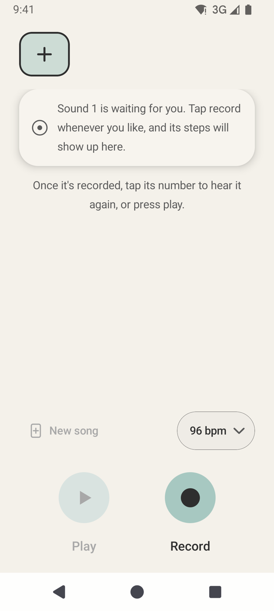
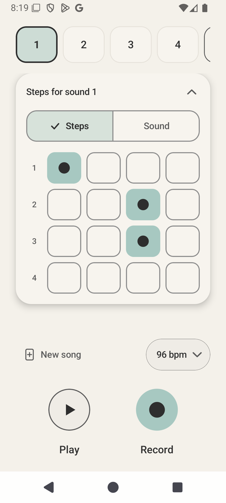
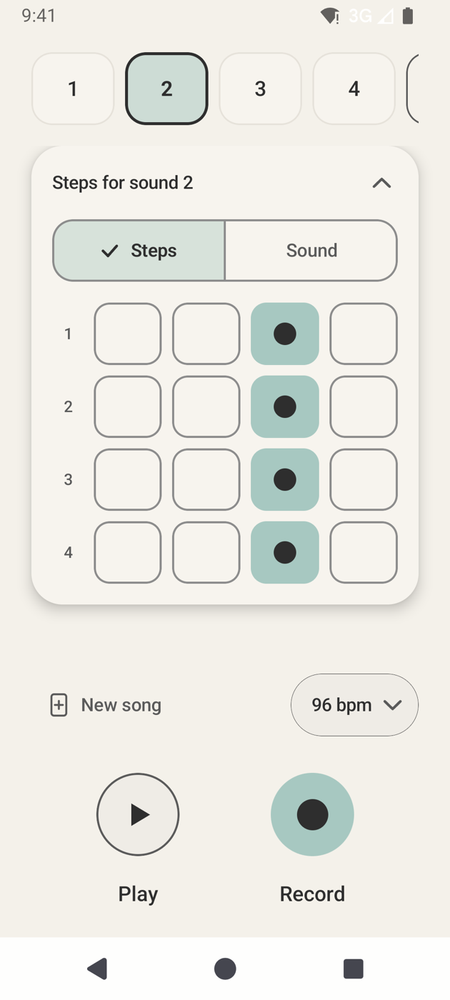
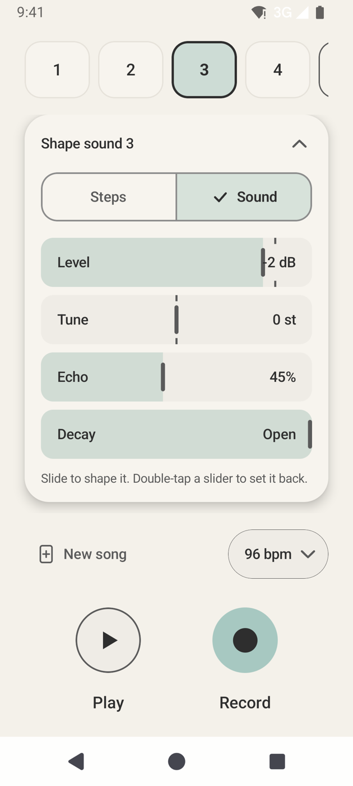
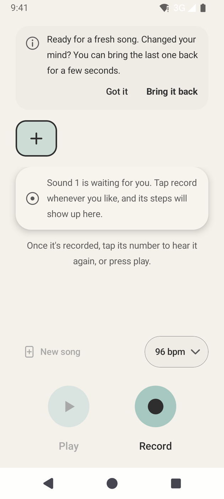

Made of you
Hum a bass, click a hi-hat, laugh a snare. Each take is trimmed to the sound and levelled, ready to play.

Say “boom”. Say “tss”. VoxLoop turns the sounds you make into a looping beat. Record up to ten, tap where they land, and shape each one until it grooves.
Free. No account. Nothing leaves your phone.
No samples to buy, no gear, no learning curve. Every sound in your song is one you made, so every beat sounds like you.
Hum a bass, click a hi-hat, laugh a snare. Each take is trimmed to the sound and levelled, ready to play.
A 16-step grid per sound, looping in time. Layer up to ten and change any step while the beat keeps going.
Fully offline. No account, no cloud, no tracking. Your recordings stay on your phone, where they were made.
Three simple ideas, one loop. Everything happens on a single calm screen.
Tap + to add a sound, then Record. Make any noise you like, up to ten seconds. Silence at the start and end is trimmed away.
Each sound gets a bar of 16 steps: four beats, four steps each. Tap the steps where it should play, or drag to paint a run.
Flip a sound to Sound to set its Level, Tune, Echo and Decay. Its echo always follows your tempo.
Press play and the bar loops at your tempo, from 60 to 160 BPM, with an optional soft click on each beat.
Six small steps. No musical training needed. If you can say “boom tss”, you’re ready.
A fresh song starts with a single + chip. Press Record, say “boom”, and press it again to stop.
Too quiet or too short? VoxLoop just lets you know gently and keeps whatever you had before.

Your new sound starts on the first step. Each row is one beat; tap squares to add hits, or drag across them to paint.

Tap + again for a “tss”, a “kah”, a “hey”: up to ten. The row scrolls sideways as it grows. Tap any number to hear that sound.

Everything loops together. The outlined square follows the beat, and any change you make lands on the next pass. Tap the tempo to speed up or slow down.
Switch the card to Sound. Level for balance, Tune for pitch, Echo for space, Decay to make it short and tight. While the song is stopped, each change plays the sound once so you can hear it.
Went too far? Double-tap any slider to set it back.

New song clears the slate and keeps your tempo. Changed your mind? Tap Bring it back within a few seconds and everything returns.


Warm cream by day, a muted dark theme by night. Large touch targets, readable at any text size, and every control speaks to screen readers.
VoxLoop is on its way to Android and iOS.